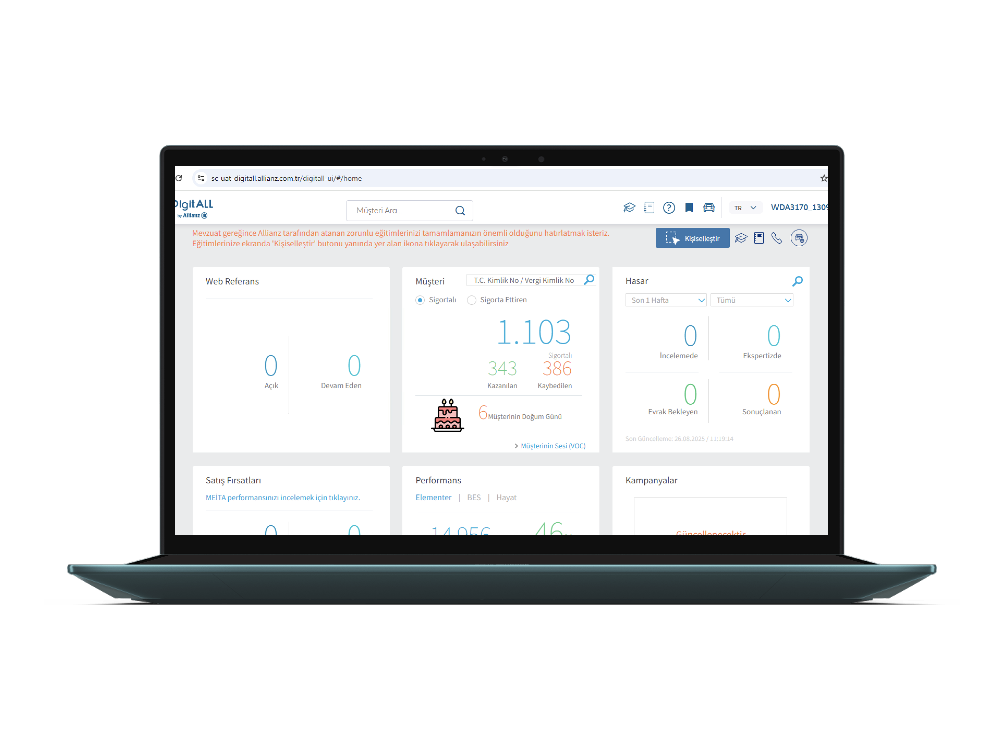
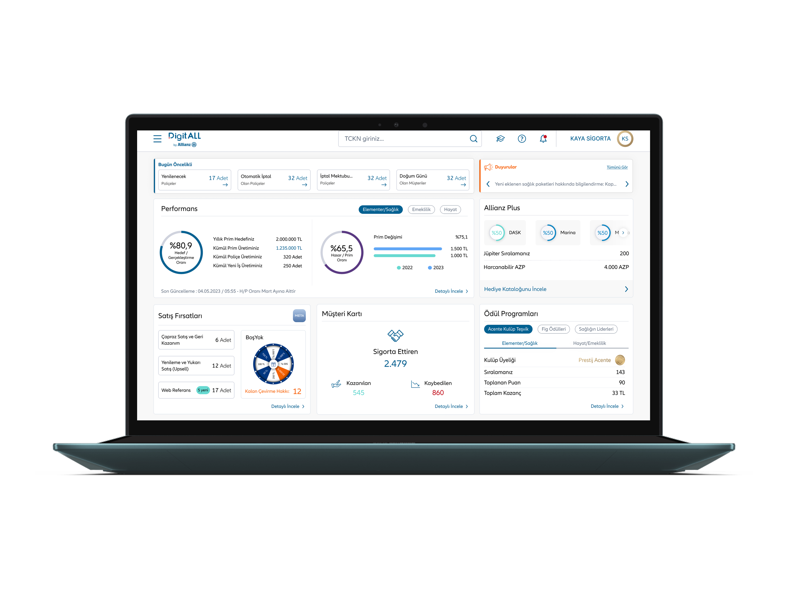

A fragmented, data-blind legacy dashboard used by 300+ insurance agents — redesigned into a priority-first, data-driven hub that transformed how agents navigate their daily workload.
DigitALL is Allianz Turkey's internal B2B platform used exclusively by insurance agents to manage their full portfolio — policies, customers, performance targets, sales opportunities, and rewards. I was the sole designer on this platform with full ownership across research, design, and stakeholder alignment.
When I joined, the homepage dashboard was a collection of 6 equal-weight tiles — Web Referans, Müşteri, Hasar, Satış Fırsatları, Performans, Kampanyalar — arranged with no visual hierarchy, no prioritization logic, and no way to understand at a glance what actually needed attention that day.
Before any wireframes, I ran structured interviews and contextual observation sessions with a cross-section of agents — from high-volume veterans managing 500+ policies to newly onboarded agents navigating the platform for the first time. The goal: understand what the first 5 minutes of their workday actually looked like, and where the legacy dashboard was failing them.
I need to check 3 separate widgets just to understand my sales situation. By the time I've pieced it together, I've already lost 10 minutes. On a busy day, that matters.
Senior Insurance Agent — 8+ years on the platformRather than rearranging the same tiles, I restructured the entire information architecture around a single question: what does an agent need to act on first? The redesigned dashboard answers that within 3 seconds of opening the platform.
The new layout is built on three layers: Today's Priorities (immediate actions required), Performance Context (how am I tracking against targets), and Opportunities & Rewards (what else should I leverage). Each layer has a clear visual identity, allowing agents to scan vertically and jump to what they need instantly.
The same data. The same agents. A completely different experience — driven entirely by information architecture, visual hierarchy, and the decision to design around agent workflows rather than data availability.


The redesign was measured through post-launch agent surveys, prototype testing time-on-task benchmarks, and qualitative feedback gathered over 6 weeks post-release. Results validated the core hypothesis: hierarchy drives efficiency, even for power users who know a platform well.
Starting with research and refusing to touch the UI until I understood the actual workflow proved critical. The 3-layer hierarchy wasn't a design preference — it came directly from observing how agents processed information. The mobile gap identification was also a significant outcome that went beyond the original brief.
With more time, I would have pushed for a longitudinal study — measuring dashboard engagement patterns over several months rather than relying on snapshot surveys. I'd also have designed personalisation options for the widget grid, since veteran agents and onboarding agents have meaningfully different priority needs.